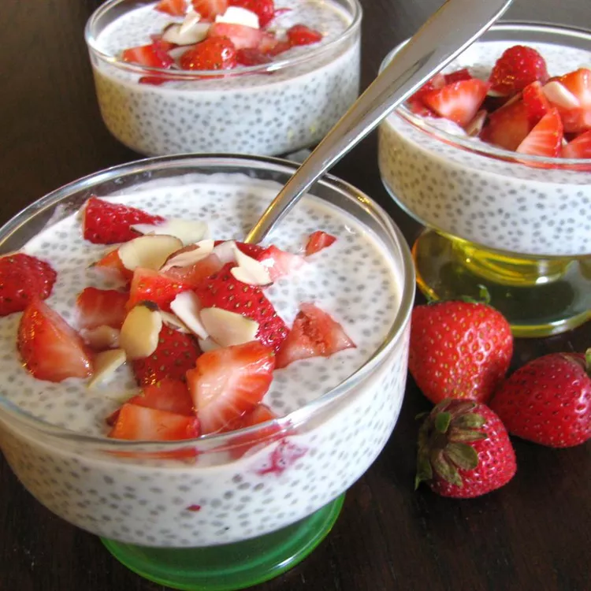

<!DOCTYPE html>
<html lang="en">
<head>
   <meta charset="UTF-8">
   <meta name="viewport" content="width=device-width, initial-scale=1.0">
   <title>Chia Seed Pudding</title>
</head>
<body>
   </html><a href="../index.html">Home</a>
   <h1>Chia Seed Pudding</h1>
   
   <h2>Healthy Creamy Chia Seed Pudding</h2>
   <h3>Ingredients</h3>
   <ul>
       <li>1/4 cup chia seed</li>
       <li>1 cup of unsweetend vanilla almond milk</li>
       <li>1 cup of vanilla fat free yogurt</li>
       <li>2 tbsp of maple syrup</li>
       <li>1/8 tsp of salt</li>
       <li>1 carton of strawberries<li>
       <li>1/4 cup slivered almonds</li>
   </ul>
   <h3>Directions</h3>
   <ol>
       <li> <strong>Step 1</strong><p>To a tupperware add chia seeds, almond milk, yogurt, maple syrup to a bowl and mix</p></li>
       <li><strong>Step 2</strong><p>Cover tupperware and place in fridge for 30 minutes to overnight.</p></li>
       <li><strong>Step 3</strong><p>Scoop a portion of the chia seed pudding into a bowl</p></li>
       <li><strong>Step 4</strong><p>Add strawberry and almonds as toppings</p></li>
   </ol>
</body>
